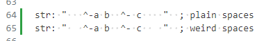

At some point I picked up a test from Red, which is basically this:
str: " ^(A0) ^-a b ^- c ^(2000) "
assert ["a b ^- c" = trim copy str]
That's some funny business.
-
The hex character ^(a0) is decimal 160, which is the standard Unicode translation for
... non-breaking space. -
The hex character ^(2000) is "EN QUAD".. a space that is one en wide: half the width of an em quad.
R3-Alpha (and Ren-C) never had support for trimming these characters out. So the test fails.
But it wound up flying under the radar, somehow.
(I think I didn't actually pick up the file it was in to the tests until some time after adding it. And by the time I added it, a lot of things were breaking due to binding and I was putting off fixing everything until it was time. Now it's that time--I'm going item by item reviewing breakages and getting the tests in order.)
But when I got to this one, the log just said:
(
str: " ^-a b ^- c "
"a b ^- c" = trim copy str
) "failed, test returned null"
Because I didn't go look up the test (I thought I had it right there)...I didn't realize there was funny business because the display doesn't give you any indication. Neither does Red's after the transcode:
red>> " ^(A0) ^-a b ^- c ^(2000) "
== " ^-a b ^- c "
Even pasting it into VS Code (which I didn't, until just now) gives you terribly weak feedback that something weird is going on:

Gee. Glad I had "show invisibles" turned on--that really did a lot for me there. 
(Seriously, what is the point of that feature if that's what it's going to do?)
I Don't Want This Stuff In Source Files
We can't fix the world. They're doing what they are doing. This stuff is the currency of text and you have to support it.
But we can set house rules. The default mode for Ren-C should only allow two invisible characters in source: space and newline. (And I'd like there to not be space at the end of lines.) This would be a hard rule for any script in official repositories.
I'd have saved myself an hour of confused digging if there'd been an error when I pasted in the console, telling me I was dealing with a messed-up situation. There'd have to be some conscious shift into a mode to tolerate it... temporarily as some kind of way to import a string into the system.
Not Ready To Support This Test
There's a sparse bitset implementation that has been on the shelf, but that's needed before we create unicode charsets for high codepoints.
Anyway, there are higher priorities. But I definitely do feel like there should be some alarms going off when you are reading files with disruptive codepoints. You should have to say "Yes, I want ugly codepoints" or "Yes, I want emoji".
A totally permissive TO TEXT! operator shouldn't be what people are reaching for. You should have to be explicit. (decode [@utf-8, whitespace: all, emoji: all] blob). Principle of least privilege... conservative defaults.
The names for the specializations should help guide behavior. (decode @utf8-unchecked blob). (Unnatural?)
- "What does that mean, unchecked (looks up documentation)"
- "Oh, I have an option to have it screen out weird whitespace? Wow! Great! "
Something like utf8-basic would make conservative choices--the same ones used by default for source code.